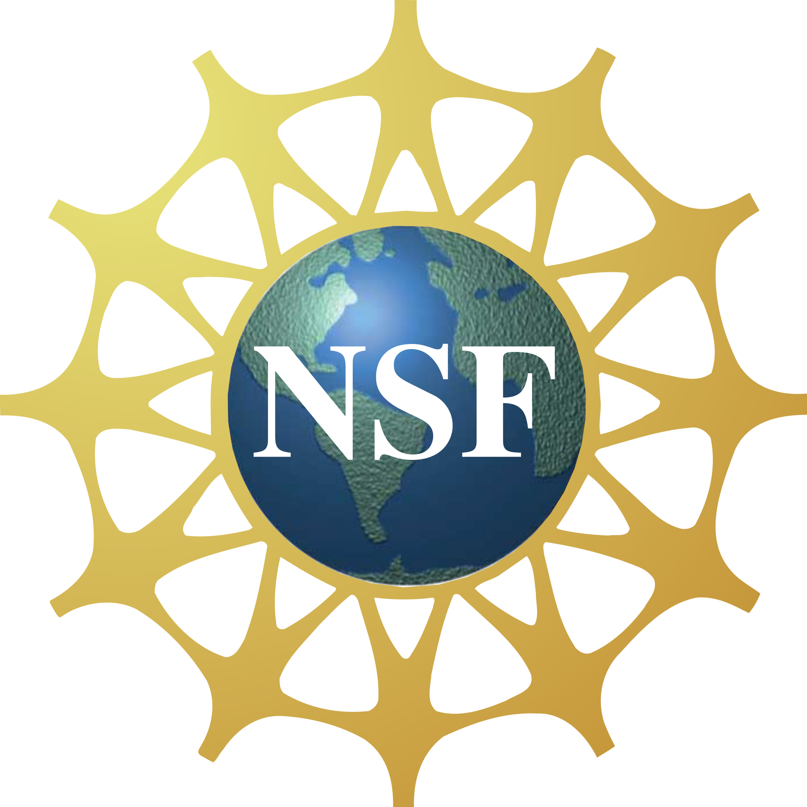
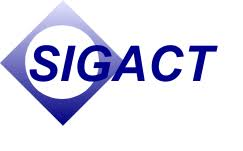
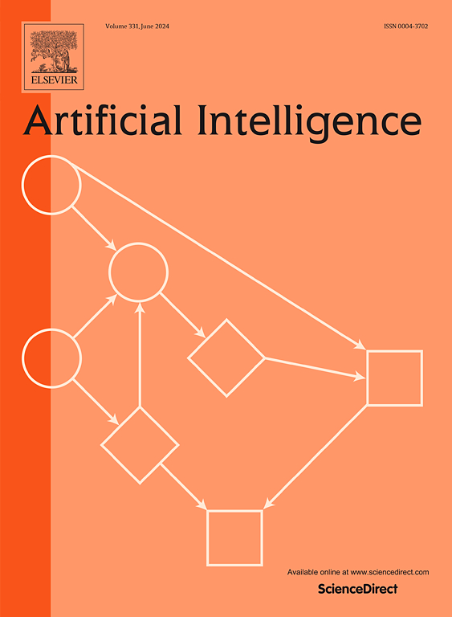
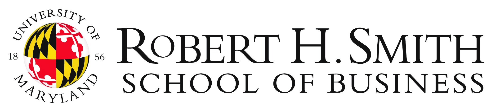

AI-SCORE 2026
The Artificial Intelligence School for Computer Science and Operations Research Education
Chicago, Illinois, May 18 - May 22
Discovery Partners Institute, University of Illinois Urbana-Champaign
Chicago, Illinois, May 18 - May 22
Discovery Partners Institute, University of Illinois Urbana-Champaign





The operations research (OR) and computer science (CS) communities have been increasingly cross-fertilizing their respective strengths in developing foundational methodological and computational tools for artificial intelligence (AI) – enabling decision-making in a broad range of use-inspired problem domains, striving to reach the full latent potential of efforts in individual fields. Combining CS capabilities that can exploit massive data-driven methods with OR models that can capture salient features of complex systems can unluck large gains in efficiency, practicality, interpretability, trustworthiness, and fairness in decision-making.
Professional communities in both fields – namely, INFORMS representing OR researchers and ACM SIGAI, representing CS researchers – convened in workshops funded by the Computing Research Association’s Computing Community Consortium. This inspired the formation of a dedicated “School” to (i) train the next generation to be dually conversant in both OR and CS methodological traditions, and (ii) pose challenge problems that are positioned to excite researchers across the CS-OR spectrum. We are grateful to the organizers of the CCC Workshops, to INFORMS, and SIGAI for the inspiration.
This is the second iteration of the AI-SCORE school, which is generously sponsored by XYZ. The previous iteration can be found here.
The modules will be jointly created thematic tutorials accompanied by curated datasets and exercises involving hands-on participation by students in cross-disciplinary teams.
| Time | Talk / Presenter |
|---|---|
| Day 1 (Monday, May 27, College Park Marriott, Patuxent Room) | |
| 8:00-8:30 | Continental breakfast |
| 8:30-9:00 | Introductory/Welcome remarks (Profs. Lavanya Marla & Ferdinando Fioretto, Chairs) |
| 9:00-10:30 | OR Perspectives to OR/AI Integration: Optimization lens (Prof. David Shmoys) |
| 10:30-10:45 | Coffee Break |
| 10:45-12:15 | OR Perspectives to OR/AI Integration: Stochastics lens (Prof. Michael Fu) |
| 12:15-1:30 | Lunch |
| 12:15-1:30 | Self-introduction of participants |
| 1:30-3:30 | CS Perspectives to OR/AI Integration (Prof. Kevin Leyton-Brown) |
| 3:30-3:45 | Coffee Break |
| 3:45-5:45 | CS Perspectives to OR/AI Integration (Prof. Tuomas Sandholm) |
| 6:00-7:30 | Dinner |
| 7:30-8:45 | Panel discussion (Profs. Ferdinando Fioretto, Sven Koenig, Kevin Leyton-Brown, Lavanya Marla, Tuomas Sandholm, David Shmoys) |
| Day 2 (Tuesday, May 28, Van Munching Hall room 1330, Smith School of Business) | |
| 8:00-9:00 | Continental breakfast |
| 8:30-9:00 | Welcome (Senior Associate Dean Wedad Elmaghraby, Prof. Balaji Padmanabhan, Director of AI Center; University of Maryland Robert H. Smith School of Business) |
| 9:00-10:30 | Reinforcement Learning (Prof. Scott Sanner) |
| 10:30-10:45 | Break |
| 10:45-12:15 | Reinforcement Learning (continued) |
| 12:30-2:00 | Lunch |
| 1:30-2:00 | League of Robot Runners competition (Prof. Sven Koenig) |
| 2:00-3:30 | Reinforcement Learning (Prof. Scott Sanner) |
| 3:30-3:45 | Break |
| 3:45-5:15 | Reinforcement Learning (continued) |
| 5:30-7:30 | Dinner |
| Day 3 (Wednesday, May 29, Van Munching Hall room 1330, Smith School of Business) | |
| 8:00-9:00 | Continental breakfast |
| 8:30-10:30 | Reinforcement Learning (Prof. Vivek Farias) |
| 10:30-11:00 | Break |
| 11:00-12:30 | Reinforcement Learning (continued) |
| 12:30-2:00 | Lunch |
| 2:00-3:30 | Reinforcement Learning (Prof. Scott Sanner) |
| 3:30-3:45 | Break |
| 3:45-5:15 | Hands-on exercises |
| 5:30-7:30 | Dinner |
| Day 4 (Thursday, May 30, Van Munching Hall room 1330, Smith School of Business) | |
| 8:00-9:00 | Continental breakfast |
| 9:00-10:30 | Fairness in Resource Allocation: Axioms, Optimization, and Markets (Sid Banerjee) |
| 10:30-10:45 | Break |
| 10:45-12:15 | Introduction to Fairness in Machine Learning (Aaron Roth) |
| 12:30-2:00 | Lunch |
| 2:00-3:30 | Fairness Tradeoffs in Online Allocation Settings (Sid Banerjee) |
| 3:30-3:45 | Coffee Break |
| 3:45-5:15 | Multigroup Fairness in Uncertainty Quantification (Aaron Roth) |
| 5:15-5:30 | Break |
| 5:30-7:30 | Dinner |
| Day 5 (Friday, May 31, Van Munching Hall room 1330, Smith School of Business) | |
| 8:00-9:00 | Continental breakfast |
| 9:00-10:30 | Multicalibration and Downstream Decision Making (Aaron Roth) |
| 10:30-10:45 | Coffee Break |
| 10:45-12:15 | Fairness topics (Sid Banerjee) |
| 12:30-2:00 | Lunch |
| 2:00-3:30 | Discussion Sessions (Fairness Case-Studies): price discrimination, organ donation, bandits |
| 3:30-3:45 | Coffee Break |
| 3:45-5:15 | Breakout sessions and wrap-up |
| 5:30-7:30 | Dinner |
| Day 6 (Saturday, June 1, College Park Marriott, Room 1308) | |
| 8:30-9:00 | Continental breakfast |
| 9:00-11:00 | Student's research discussion |
| 11:00 | End of the school (lunch on your own) |
Please apply at the Google form here. The form will request the student’s CV, a one-page (maximum) statement describing the problem area at the intersection of OR and CS/AI being explored by the student as a Ph.D. topic; and a short statement from the Ph.D. advisor confirming the student is currenlty a first or second year, the student's research area is in OR/AI, and the anticipated benefit (maximum one page).
Application deadline: April 4, 2026